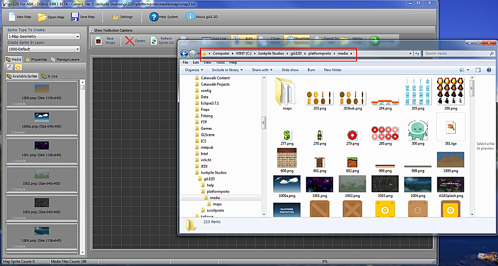
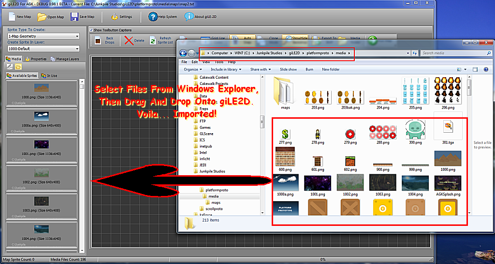
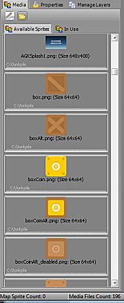

| Media And Your AGK Project |
| The heart and soul of any giLE2D map project is the MEDIA that you want to use to make your creation! It is important to know what types of media are available to you, and how they are used by giLE2D. While we supply two frameworks for you to test your creations, we strongly encourage you to go for it, and create your own AGK projects! |
| That being said, this section is designed to show you how to get media into your giLE2D projects quickly and hassle free! |
| giLE2D supports the following file formats for media: |
|
Windows Bitmap (*.bmp) |
| giLE2D can read other media formats, but the ones above will give you the most productive bang for your buck! |
| If you are creating a map inside a current AGK project, that project (more than likely) already has a media folder. If it does, giLE2d will look inside it and make available to you all the file types specified above. |
| If the project media folder has nothing in it... never fear... we supply some excellent open-source graphics for you to get started with (we collected some good stuff for ya, we're nice that way...) |
| Irrespective, we will contend with both scenarios. |
| Scenario 1: I created a project and don't have sh@# in my media folder yet! |
| OK, as Douglas Adams would say ... "Don't Panic!" ... Here's what you do... |
|
In the folder that giLE2D was installed, you'll notice a folder called
"platformproto". Well, that has a "media" folder underneath it! If you
open Windows Explorer and navigate to that folder (e.g.,
C:\Junkpile Studios\giLE2D\platformproto\media), you
will see the following: |
|  |
| You can then select files from this folder in Windows Explorer, and just drag and drop them onto giLE2D. Voila... the files will be imported into the media/sprite list! |
| NOTE: If you get an error... don't worry, this is dealt with in the next section! |
|  |
| Scenario 2: I created a project and put some files in my media folder! |
| OK, in this case, the files will just "show up" in your media/sprite list |
|  |
| If you do want to add more stuff to your list, you can follow scenario 1 above, from any folder on your computer that has the accepted file types in it! Just drag and drop the files onto giLE2D, and it will import them! |
| And so, the next thing I should tell you about would be concerning the actual media items and some rules to follow for maximum efficiency. If you want to read about that now, then go ahead and click here, else go back to the home screen! |